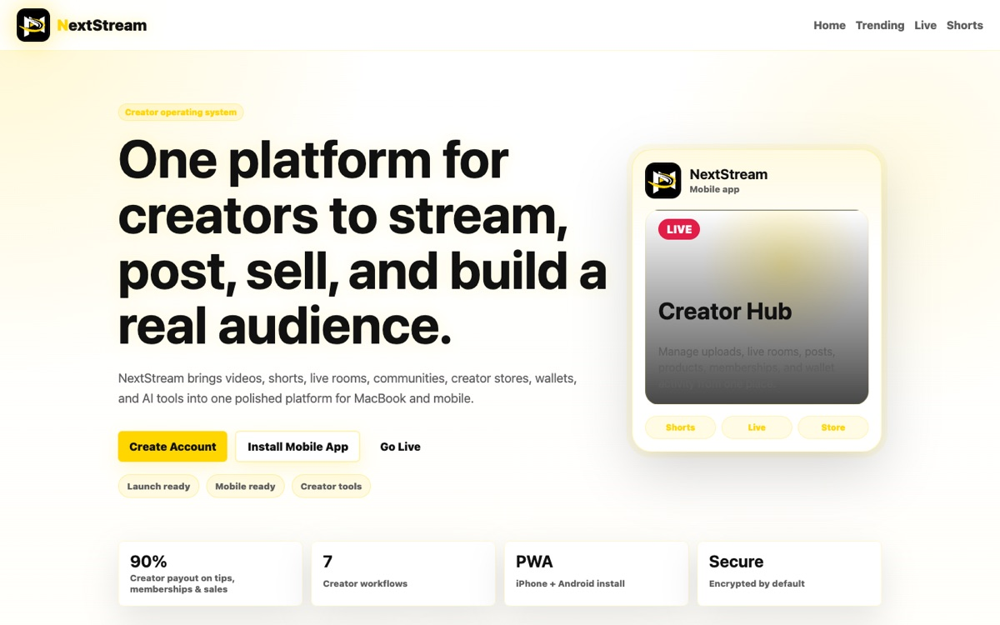
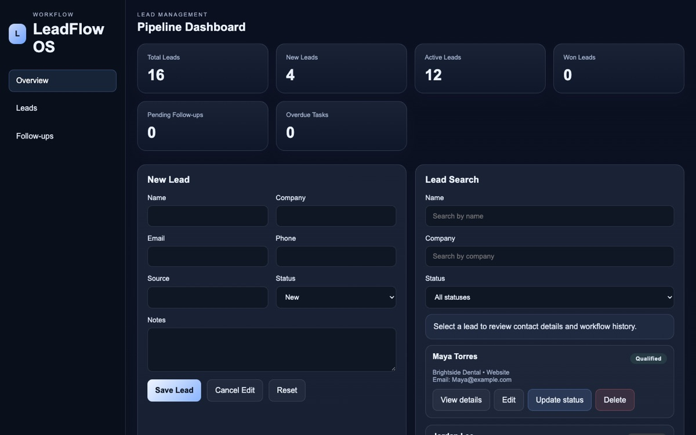

Business-aware
Practical outcomes first, visual polish second.
Open to developer & AI automation roles
Currently building a creator video platform
I’m Kiny St Charles, a full-stack developer working in Node.js, Cloudflare and AI tooling. I turn messy business workflows into software people actually use.
01 — About
I grew up in the Bahamas, finished school in Nassau in 2020, and now live in Naples, Florida. I didn’t come up through a CS degree. I came up through jobs where things had to work, every shift.
I supervised and trained a lifeguard team at Great Wolf Lodge, moved freight at The Home Depot, and today I serve guests at the Four Seasons. Those jobs taught me what good software should feel like: calm under pressure, clear to the person using it, and reliable when it counts.
After shifts I build. This year that’s become 15+ projects: a creator video platform, a CRM, a delivery app for Nassau, a tip-allocation tool for restaurants, a self-hosted AI homelab, and the command center that ties it all together.
I work like a small team. Claude Code is my lead builder, Codex reviews and covers as backup, and ChatGPT helps me plan and research. They all report into HQ, the MCP server I built, so nothing gets lost between them. I make the product calls, check the work and ship it.
Finished high school in the Bahamas, where I grew up.
Ran shifts, trained new guards and handled guest issues where safety came first.
Receiving, inventory and fulfillment in Houston. Systems thinking, at scale.
NextStream, HQ Command Center, LeadFlow OS and a home server stack, built with an AI team.
Looking for a team where I can build, support and keep learning.
Practical outcomes first, visual polish second.
If I do it twice, I look for a way to make a machine do it.
Encryption, CSRF, rate limits and scoped keys from the start.
Small releases, often. NextStream alone has 75+.
02 — Selected work
Full-stack products and AI tooling, labeled honestly by status.
A full-stack video platform for creators: uploads, live streams, shorts, messaging, a creator studio, tips and a marketplace, installable on phones as a PWA.
An AI command center that tracks several businesses in one place and lets AI coding agents claim work, report progress and log decisions through MCP.
A CRM MVP for lead tracking, follow-up tasks, session-based authentication and organization-scoped dashboards.
Private repo, code walkthrough on request
Dependency-free HTML, CSS and JavaScript with scroll-driven motion, live GitHub data and an automated site check on every push.
Also building
Smaller and earlier-stage builds. Status labels are honest: beta means private testing.
Builds and delivers small-business websites, with request forms and a private inbox.
Visit ↗Mobile-first shopping and food delivery pilot for Nassau. Next.js, Supabase.
Restaurant tip-allocation engine with staff accounts, versioned rules and exports.
Personal and shared life planner. Expo + Supabase, private item sharing.
Visit ↗ LiveSearch and stream legal free music from open catalogs. Installable PWA.
Visit ↗ BetaApproval-first paper-trading desk with TOTP sign-in. No live trading, by design.
Visit ↗Property visits and reports in The Bahamas, with customer, field-rep and admin portals.
Missed-call text-back for home-service companies. Node, Supabase, Twilio.
03 — Case studies

01
02

03
04 — Live
Pulled live from the GitHub API each time the page loads. No manual edits.
Last deployed
checking…
Automated site check
–
GitHub Actions verifies every asset on each push
Latest commits to this site
05 — Homelab
A Debian box at home running 13 containers with Docker Compose: private AI, network-wide ad blocking, monitoring and remote access over Tailscale.
Open WebUI as one chat interface for local Ollama models and Claude/OpenAI APIs, with Qdrant for memory and Whisper for voice.
Pi-hole blocks ads for every device on my Tailscale network, at home or away. Tested by resolving ad domains to 0.0.0.0.
Prometheus scrapes node-exporter, cAdvisor and Pi-hole metrics; Grafana dashboards show host and container health.
Portainer for containers, code-server for coding from my phone, Home Assistant, and scripted daily backups.
06 — Services
For founders, small businesses and teams who need software that does real work.
Responsive, fast websites and full-stack web apps with auth, payments and admin tools.
Claude-powered assistants, MCP integrations and workflows that remove repetitive manual work.
Keeping a site current, secure and stable: backups, monitoring, rate limits and fixes.
07 — Skills
Clear separation between what I’ve shipped and what I’m working toward.
08 — Contact
I’m open to junior developer roles, AI automation work, web support and freelance projects that need thoughtful execution and dependable communication.